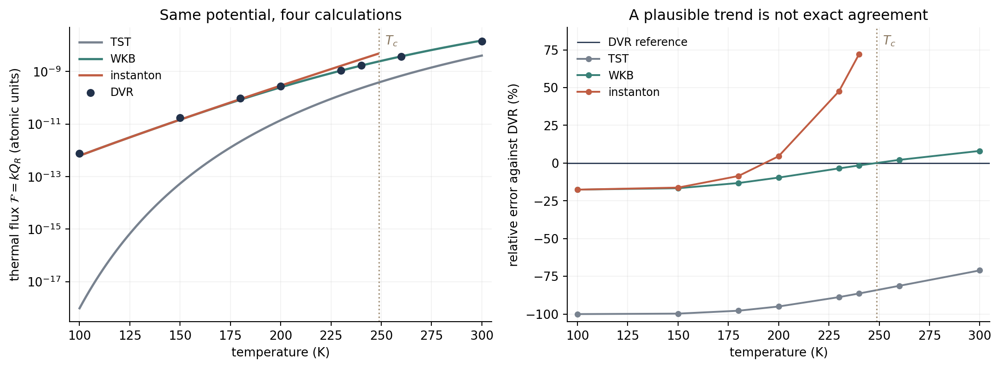

Chemical Reaction Computation - Part V
From Barrier Penetration to Imaginary-Time Instantons
We want a reaction rate. Why, then, do calculations of that rate sometimes ask us to find a periodic trajectory in imaginary time? The trajectory can seem like a new problem introduced just when the original problem was becoming clear.
The missing connection is that instanton theory is a way of approximating a quantum rate, not a request to simulate an unusual molecular movie. It identifies a dominant reactive contribution and estimates the contributions close to it. In one dimension, we can see the whole argument as an ordinary energy integral—and obtain a rate before introducing any trajectory.
Part II compared TST with a quantum calculation on a fixed barrier. Part IV asked how to sample rare configurations. Here the question is different: can we include quantum nuclear motion without solving the full wave dynamics in every molecular coordinate? Miller's 1975 work on nonseparable reaction rates is an important historical landmark; later ring-polymer formulations made the stationary-path picture computationally useful. We will follow the rate calculation first, and the path interpretation second.
1. Start with the quantity we actually want
For one incident scattering channel, with the reactant asymptote chosen as zero energy, the result derived in Part II is
\(P(E)\) is the probability of transmission at energy \(E\); the Boltzmann factor weights the available energies. The integral is a thermal flux numerator. Dividing by a consistently defined reactant partition function \(Q_R\) gives the corresponding rate. For an unbound one-dimensional coordinate, that normalization requires a length or concentration convention. We therefore compare \(\mathcal F\), or rate ratios with the same \(Q_R\), rather than presenting arbitrary numbers as molecular rates in s\(^{-1}\).
There are two distinct numerical jobs here: determine \(P(E)\), then perform its thermal average. Classical TST replaces transmission by a step: zero below the barrier height \(V_0\), one above it. Quantum scattering does not make that replacement. WKB and instanton theory introduce two different approximations to these jobs.
2. First approximate transmission; then find the important energies
Below a smooth barrier, the leading WKB expression is
The turning points satisfy \(V(x_\pm)=E\). The integral accounts for width, shape, and mass, not just barrier height. Its factor of two converts the attenuation of a wave amplitude into attenuation of a probability.
Where does the WKB exponential come from?
Write the decaying wave as \(\psi=e^{-I/\hbar}\). Substitution into the stationary Schrödinger equation gives
At leading semiclassical order, neglect \(\hbar I''\), so \(I'=\sqrt{2m(V-E)}\) for the decaying branch. Integrate across the forbidden region and square the amplitude. Matching solutions across turning points supplies the connection between regions; the simple exponential retained here is not a uniformly accurate formula at the barrier top.
Now insert this approximation into the below-barrier part of the thermal integral. Its integrand is \(e^{-\Phi(E)}\), where
Increasing the energy makes transmission easier, but makes that energy less thermally populated. Decreasing it reverses the trade-off. If the integrand has an interior peak, its location \(E_*\) follows from minimizing the combined exponent:
This selects the most important energy at a specified temperature. It has not yet produced a rate: the value at the top of a peak is not the area under that peak.
3. The missing step: peak height times energy width
Two integrands can have identical maxima but very different integrals if one peak is broad and the other narrow. To estimate our integral, retain the curvature near \(E_*\):
The linear term vanishes because we chose a stationary point. If the important range is localized away from the integration endpoints, extending this Gaussian to the whole real line gives
Thus the leading one-dimensional thermal instanton result is
The exponential is the peak height. The square-root factor is its effective energy width, with \(\sigma_E=[\Phi''(E_*)]^{-1/2}\). Neither factor can replace the other. Together, with the flux normalization, they give a quantity that can be compared with the quantum calculation.
For this one-dimensional problem, the rate calculation is already finished. If we can evaluate \(W(E)\), find the minimum of \(\Phi(E)\), and evaluate its curvature, there is no additional trajectory that we must find before obtaining this approximation to the rate.
This also distinguishes the two semiclassical calculations. Thermal WKB numerically integrates its approximate transmission over energy. The leading instanton formula additionally approximates that integral by its dominant Gaussian contribution. It can make the calculation more compact; it is not guaranteed to improve its accuracy. This energy-saddle construction is the one-dimensional form used below, not a universal formula for every instanton application.
4. Why introduce a trajectory at all?
In one dimension there is only one coordinate to cross. For a molecule, knowing the energy does not tell us which atoms move together, by how much, or along which route. We need a way of finding the important collective displacement without constructing the full multidimensional quantum wavefunction. A stationary path supplies that representation.
The path expresses the same energy condition
Consider an auxiliary motion between the turning points with speed
This is classical motion in the inverted potential \(-V\), with auxiliary conserved energy \(-E\). It is allowed where the original motion is classically forbidden. A complete trip goes from one turning point to the other and back. Differentiate \(W\); its endpoint terms vanish because the momentum is zero at the turning points:
The condition selecting \(E_*\) therefore says that the corresponding auxiliary orbit has period \(\beta\hbar\). We have translated the same optimization problem into another language, not introduced an independent physical assumption about how long a molecule takes to react.
Why call the parameter imaginary time? Substituting \(t=-i\tau\) changes the quantum evolution operator \(e^{-i\hat Ht/\hbar}\) into \(e^{-\hat H\tau/\hbar}\). At \(\tau=\beta\hbar\), this is exactly the Boltzmann operator. The existing path-integral note derives this thermal representation; we do not need to repeat its discretization here.
The path computes the exponent; nearby paths supply the prefactor
For the auxiliary periodic orbit, define the imaginary-time action \(S_E\), where the subscript denotes Euclidean action, not differentiation with respect to energy. Writing \(\dot x=dx/d\tau\), its conserved energy gives \(m\dot x^2/2=V-E_*\). Therefore,
The kinetic integral covers both legs of the orbit and equals \(W(E_*)\). Consequently, \(S_E/\hbar=\Phi(E_*)\). Calculating this path action gives the same exponential that we already obtained from the dominant energy. It does not give the full rate by itself.
In several dimensions, the path becomes a sequence of molecular configurations and the kinetic term becomes \(\sum_i m_i\dot q_i^2/2\). A quadratic expansion around the reactive stationary path accounts for nearby paths and provides fluctuation factors. The schematic rate is \(k_{\mathrm{inst}}\simeq A(T)e^{-S_E/\hbar}\): the prefactor includes the appropriate fluctuation, normalization, and reactant factors. It is not an arbitrary fitted attempt frequency, nor just the one-dimensional energy width.
What would a molecular calculation actually do?
Given a potential-energy surface and temperature, discretize a periodic path of duration \(\beta\hbar\) into a ring of configurations. Initialize a reactive path and solve the stationary-action equations. Varying the action gives \(\delta S_E/\delta q_i=-m_i\ddot q_i+\partial_iV=0\): motion on the inverted potential again. Evaluate the converged action, calculate fluctuations from its second derivatives, and combine them with the reactant partition function to obtain the rate. Check path discretization and competing routes.
This is a reactive saddle search, not unrestricted minimization of the thermal action: unrestricted minimization can simply collapse the ring into a stable reactant configuration. The time-translation zero mode and unstable reactive direction also require proper treatment in the prefactor. A first-principles derivation of instanton rate theory explains why these ingredients belong together.
That is the computational purpose of instanton theory: replace a demanding quantum nuclear rate calculation by a semiclassical calculation of important reactive paths and their neighborhoods. It still needs a good potential surface; it does not automatically solve electronic transitions, environmental sampling, or all dynamical recrossing. Its imaginary-time path is not a real-time trajectory, and optimizing a ring is not the same calculation as propagating RPMD.
5. One barrier, four calculations
We now test exactly the rate formula just derived. Use the same symmetric Eckart barrier as in Part II:
All four methods use this identical Hamiltonian and a common reactant normalization. There is no fitting to the DVR results. The barrier's analytic transmission probability provides a separate check on DVR, not a substitute for it.
The instanton is analytically accessible here
For \(0<E<V_0\), evaluating the action integral gives
Evaluating the action integral
Set \(y=\sinh(ax)\) and \(c^2=V_0/E-1\). The symmetric turning points become \(y=\pm c\), so
With \(y=c\sin\theta\), the integral is \(\int_0^{\pi/2}c^2\cos^2\theta/(1+c^2\sin^2\theta)\,d\theta\). Write its integrand as \((1+c^2)/(1+c^2\sin^2\theta)-1\). Substitution \(z=\tan\theta\) gives \(\int_0^{\pi/2}d\theta/(1+c^2\sin^2\theta)=\pi/[2\sqrt{1+c^2}]\). The result is \((\pi/2)(\sqrt{1+c^2}-1)\), which yields \(W(E)\) above. Differentiating it gives the displayed \(E_*\) and curvature.
Insert these quantities into the boxed rate formula. That is the instanton calculation in this example: no orbit optimizer is needed. The requirement \(E_*<V_0\) becomes \(T<T_c\), with
This is the crossover temperature of this barrier. The basic nontrivial periodic instanton disappears at the barrier top there. Being below \(T_c\) is necessary for this formula, but is not sufficient to ensure accuracy.
For a concrete substitution, at 150 K we obtain \(E_*=0.003635\) Ha, \(\Phi(E_*)=17.732\), and \(\sigma_E=0.001858\) Ha. The peak height is \(1.991\times10^{-8}\) and the effective width is \(\sqrt{2\pi}\sigma_E=0.004658\) Ha. In atomic units, where \(\hbar=1\),
This multiplication—not the selected energy alone—is the predicted thermal flux. DVR gives \(1.762\times10^{-11}\) a.u. at the same temperature, so the instanton-to-DVR ratio is 0.8377.
What is computed in each column?
- TST: use step-function transmission. The energy integral gives \(\mathcal F_{\mathrm{TST}}=e^{-\beta V_0}/(2\pi\beta\hbar)\).
- Thermal WKB: numerically integrate \(e^{-\beta E-W(E)/\hbar}\) below the barrier, and use \(P=1\) above it. This convention includes the classical over-barrier contribution but neglects quantum reflection there.
- Instanton: evaluate the Gaussian energy-saddle formula, including its prefactor, only for \(T<T_c\). We do not append a separate TST term or apply a crossover repair.
- DVR: construct and diagonalize a sinc-DVR Hamiltonian, evaluate a thermal flux–side correlation, and average a pre-recurrence plateau. Neither WKB transmission nor the analytic Eckart transmission enters this calculation.

The table reports \(k_{\mathrm{method}}/k_{\mathrm{DVR}}=\mathcal F_{\mathrm{method}}/\mathcal F_{\mathrm{DVR}}\). Thus 1 means agreement, 0.8 means 20% too small, and 1.7 means 70% too large.
| Temperature | TST / DVR | WKB / DVR | Instanton / DVR | DVR / DVR |
|---|---|---|---|---|
| 100 K | \(1.28\times10^{-6}\) | 0.8243 | 0.8242 | 1 |
| 150 K | 0.00309 | 0.8335 | 0.8377 | 1 |
| 180 K | 0.02225 | 0.8679 | 0.9143 | 1 |
| 200 K | 0.05029 | 0.9040 | 1.0453 | 1 |
| 230 K | 0.11234 | 0.9648 | 1.4754 | 1 |
| 240 K | 0.13651 | 0.9845 | 1.7213 | 1 |
| 260 K | 0.18724 | 1.0213 | — | 1 |
| 300 K | 0.28920 | 1.0806 | — | 1 |
A dash means that this instanton approximation is not applied, not that the physical rate is zero.
How reliable is the DVR reference?
The DVR kinetic matrix and flux operator are already derived elsewhere on this site. For this lower-temperature test, we use the symmetrically thermalized correlation
Here \(\hat h=\Theta(\hat x)\) selects the product side. This is neither the ordinary Boltzmann flux–side function used in Part II nor the Kubo transform in the separate DVR tutorial. It has the same scattering-rate plateau; the symmetric thermal weighting is numerically helpful at low temperature. This convention is stated explicitly in both the code and the primary flux-correlation formulation.
The production grid spans \([-50,50]\) bohr with spacing 0.1 bohr: 1001 grid points and 472 eigenstates below 0.06 Ha. We average from 6000 to 10000 atomic time units, about 145–242 fs, before finite-box recurrences. We check a smaller box, a finer 0.08-bohr grid, a higher 0.09-Ha state cutoff, and a later 8000–12000 time window.
Across the temperatures shown, the largest change under these checks is 0.014%; the largest deviation of the production DVR result from independent analytic thermal scattering is 0.0351%, at 100 K. The convergence data and plateau samples are available. “Exact” here means the quantum solution of this specified one-dimensional Hamiltonian; the finite-grid DVR reference approximates it to the tested accuracy, not mathematical exactness or experimental truth.
What does the comparison tell us?
At 100 K, WKB and instanton agree closely with each other but both underestimate DVR by about 18%. The energy-saddle step introduces little additional error here; the leading WKB transmission already limits the accuracy. Meanwhile, classical TST is far too small because its step-function transmission excludes the energies carrying most of the quantum flux.
At 200 K, the instanton result happens to be within about 5% of DVR. That does not establish a uniformly better approximation. Near \(T_c\), the saddle approaches the upper endpoint \(V_0\), and the Gaussian treatment extends significant weight outside the domain where the underlying below-barrier approximation applies. At 240 K, thermal WKB is about 1.5% low, while the basic instanton is about 72% high. Improved crossover treatments exist, but would be a different approximation from the one tested here.
The useful distinction is therefore not “TST is old, instanton is new, so instanton must win.” TST simplifies transmission; WKB approximates transmission while retaining a numerical thermal integral; the leading instanton also approximates that integral by a stationary contribution. DVR solves the small quantum model numerically. This example tests those approximation steps; it does not demonstrate the computational savings of a multidimensional molecular instanton.
The central idea is now complete: find the dominant contribution, include its neighborhood, and obtain a rate. In one dimension we did this directly in energy space. In a molecule, the imaginary-time path is a practical way of representing and finding that contribution—not a replacement for the rate we set out to calculate.
Reproduce the comparison
Download the standalone four-method Python script and run it with NumPy, SciPy, and Matplotlib installed:
python eckart_four_methods.pyIt calculates all four results, checks the action integral and quadrature tolerance, performs the DVR convergence tests, and writes the figure and compact CSV files. The full numerical table includes fluxes in atomic units and the analytic validation reference. No precomputed analytic flux is supplied to DVR. No ring-polymer optimization or RPMD simulation is claimed by this one-dimensional test.
Sources and further reading
- Eckart, “The Penetration of a Potential Barrier by Electrons,” Phys. Rev. 35, 1303–1309 (1930): the solvable barrier used for validation.
- Miller, “Semiclassical Limit of Quantum Mechanical Transition State Theory for Nonseparable Systems,” J. Chem. Phys. 62, 1899–1906 (1975): a historical foundation for multidimensional semiclassical rates.
- Richardson and Althorpe, “Ring-Polymer Molecular Dynamics Rate-Theory in the Deep-Tunneling Regime: Connection with Semiclassical Instanton Theory,” J. Chem. Phys. 131, 214106 (2009).
- Richardson, “Derivation of Instanton Rate Theory from First Principles,” J. Chem. Phys. 144, 114106 (2016): a scattering-based derivation of the rate and its prefactor.
- Richardson, “Microcanonical and Thermal Instanton Rate Theory for Chemical Reactions at All Temperatures,” Faraday Discuss. 195, 49–67 (2016): extensions beyond the basic thermal formula tested here.